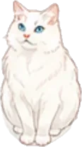

Day Light

Get the sun into every flat, through the windows and blinds
Night Light: the same idea by night, where every cat blinks the four beside it

Get the sun into every flat, through the windows and blinds
Night Light: the same idea by night, where every cat blinks the four beside it